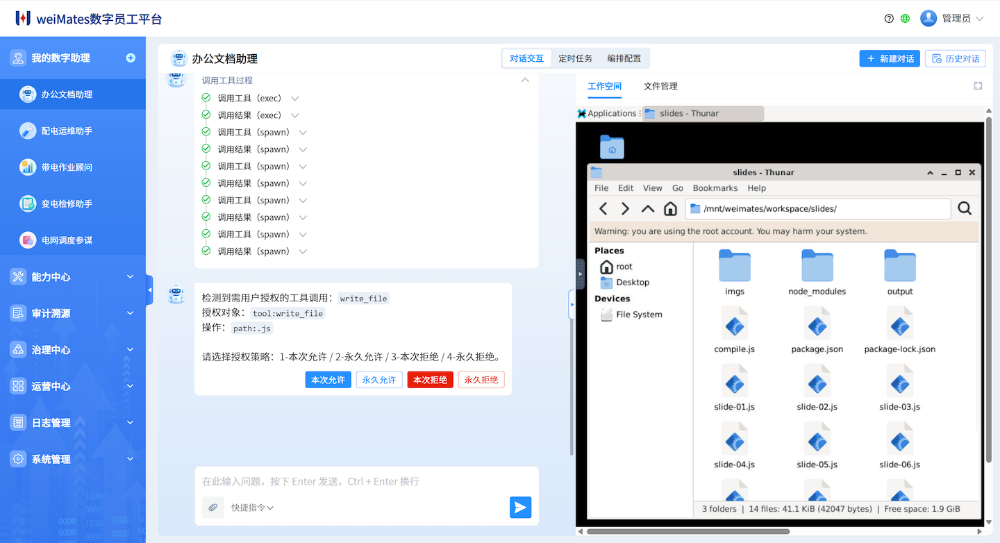

集中管理资产，支撑数字员工
统一管理业务技能、知识库与业务系统接口，把数字员工所需能力沉淀为企业资产。

客户演示稿企业级数字员工平台
华微软件 weiMates 为企业构建可协作、可编排、可治理的数字员工体系，让 AI 持续处理任务、连接系统、沉淀经验，并在可控边界内独立工作。
每个数字员工运行在独立工作空间中，边界清晰，便于理解与管理。
每次操作都能结合身份、上下文与策略规则实时裁决。
从历史任务与用户反馈中持续学习，沉淀为可复用能力。
01 · 平台定位
平台价值
weiMates 集中管理数字员工所需的技能、知识、工具与接口，让企业用户能根据自己的需要高效地构建、使用与优化自己的数字助理。
企业角色变化
企业与 AI 的关系，正在从把它当作工具来使用，走向管理能够独立协作的数字员工，并进一步把经过验证的做法沉淀为可持续复用的流程资产。
企业需要的不是另一个会聊天的入口，而是一套能够被组织、被约束、被复用的数字员工体系。
02 · 产品界面
weiMates 把多数字助理协作与可见的工作空间放在同一个界面中。用户既能统筹不同数字助理的分工与状态，也能随时看到当前数字助理如何执行任务，并在必要时接手关键步骤。
像管理团队一样集中查看多个数字助理的状态、分工与切换关系。
实时查看执行过程与当前桌面，必要时用自己的账号接管关键步骤。

03 · 核心优势
统一管理业务技能、知识库与业务系统接口，把数字员工所需能力沉淀为企业资产。
把验证有效的动态流程固化为可执行代码，既提升执行效率，也增强流程可靠性。
接入企业本体后，数字员工可以理解组织关系、业务语境和真实任务目标。
从历史任务和用户反馈中不断积累经验，持续优化角色能力与工作策略。
04 · 应用场景
不做抽象的“AI 提效”，而是让数字员工在明确的岗位职责、任务链路和业务约束中持续创造价值。
自动汇集多源数据，完成口径对齐、异常识别、趋势分析与结论提炼。
整理素材、生成初稿、补全图表与摘要，并生成可汇报的演示材料。
连接生产计划、资源状态与异常信息，辅助排产协同、进度跟踪和例外处理。
完成问题识别、标准答复、工单流转与服务记录整理，提升一致性与响应效率。
05 · 安全治理
企业最关心的不是“会不会做”，而是“出了问题谁负责、怎么追、能不能控”。
weiMates 把数字员工放进清晰的权限边界、知识边界与流程边界之内，让管理者看得见、业务团队接得住、组织可以持续复用。
06 · 权威背书
weiMates 围绕企业级数字员工的安全治理、可信运行与落地实践，持续获得行业项目、专业榜单与信息安全测试的认可。
2026年广州市
首版次软件产品研发项目广州人工智能创新发展榜单
“AI+安全”优秀案例中国赛宝实验室
信息安全测试07 · 预约演示
告诉我们您的业务流程、组织边界和落地目标，华微软件 weiMates 团队可以一起梳理适合先落地的角色、知识与工作流。
优先切入最容易体现价值、又最需要流程可控的任务链路，让数字员工先在小范围内跑通并沉淀经验。
先从经营分析、报告编制、客户服务或生产协同等高频任务切入。
确认组织权限、知识来源、业务接口和需要人工确认的关键节点。
从一个可验证的小范围场景开始，快速形成可复用、可治理的落地范式。
08 · 持续关注
了解公司动态、产品发布与合作信息。
持续获取数字员工方法论、案例观察与实践内容。
官网：www.huaweisoft.com ｜ 邮箱：contact@weimates.ai